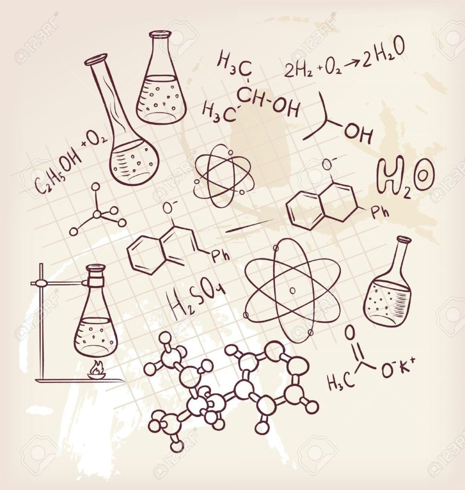
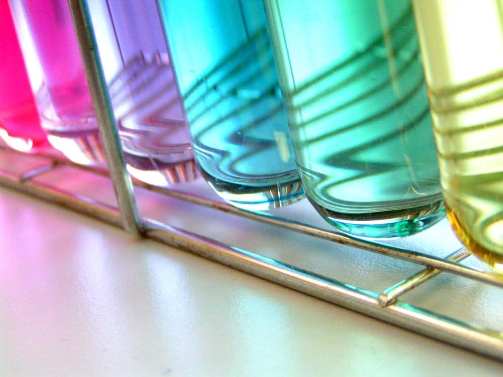

«Химия» представлена набором модулей, формирующих у студентов знания как в области фундаментальной химии, так и в инновационных направлениях. Основная часть программы посвящена приобретению практических умений и навыков в области аналитической химии, тонкого органического синтеза, инструментальным методам химический экспертизы. Уделяется внимание освоению принципов нормативно-правового регулирования основных областей применения химической экспертизы.
|  |
Кроме того, студентами изучаются технологические процессы химических производств, технологии производства современных материалов, особенности организации таких производств. В рамках программы предусмотрены междисциплинарные модули на стыке химии и биологии, химии и физики. Особая роль отводится информационным технологиям, используемых в различных областях применения химии. |
— раздел химии, связанный с изучением строения, реакционной способности и свойств всех химических элементов и их неорганических соединений. Эта область охватывает все химические соединения, за исключением органических веществ.
|
Неорганические соединения используются в качестве катализаторов, пигментов, покрытий, поверхностно-активных веществ, лекарственных препаратов, топлива и прочих продуктов, которыми мы пользуемся каждый день. |
 |
| 1 курс | 2 курс | 3 курс | 4 курс |
|---|---|---|---|
| Физика | Введение в молекулярную биологию | Модуль «Химия полимеров» | Аналитическая химия |
| Матанализ | Квантовая химия и строение вещества | Физическая химия | Органическая химия |
| Общая и неорганическая химия | Аналитическая химия | Коллоидная химия | Химия ВМС |
| Научные основы технологических инноваций | Органическая химия | Физические методы исследования в химии | Модуль «Биотехнология» |
| Введение в клеточную биологию | Программирование | Химические технологии | |
| Матанализ | Общая экология | Модуль «Экологическая химия» | |